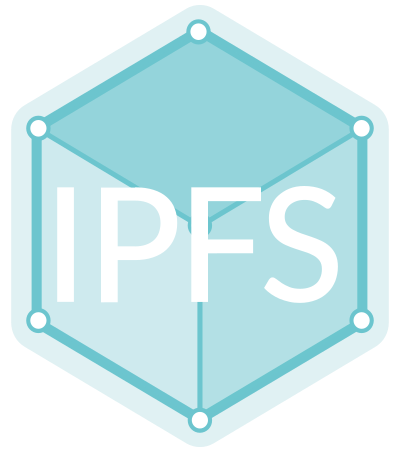

# The Distributed Web ## With IPFS --- # Who am I - Dmitri Ryajov - go by `dryajov` everywhere - working on IPFS - specifically on the js-ipfs circuit relaying --- ## Why (re)distribute the Web? --- The web is one of humanities greatest tools. It has permeated every aspect of modern life; enhanced communications; enabled new ways of collaboration and interaction; and yet it is extremely vulnerable - governments try to censor it all the time - important services and infrastructure are vulnerable to DDoS attacks - vital information such as medical research and important scientific, technological and cultural advances are subject to copyright takedowns - it has enabled the formation of monopolies that control our data and have enormous say in our digital life --- The Web and in particular HTTP is not very efficient - Watching a video from youtube or vimeo 10 times on the same computer will download the same video 10 times over. That generates huge waist and slows things down for everybody. - There is also a good chance someone in your neighborhood is watching the same video. Why download it from the original source? Why not get it from your neighbor? --- Bandwidth around the world (with a few exceptions) has not been keeping up with the constantly increasing usage and that won't change in the near feature. - The Web is very bandwidth hungry - we need a connection for the most basic things to work. This is changing with things like offline first and Progressive Web Apps, but it doesn't really solve the problem, it simply hides it in most cases. - There is around ~50% of the worlds population that has not yet gone online or are only intermittently connected. How are we going to scale the web when they do, and more over, how can we make it so that their experience doesn't suck when it happens? - What happens when latency is ~10 or even ~5 minutes? Impossible? Think twice - a Mars mission might not be that far away. --- ### The Web is neither permanent nor verifiable - Links disappear all the time taking with them important information, services and part of our history - link roth - In most cases, there is no way for us to know that the resource we're accessing today is the same resource we've accessed yesterday - content is non verifiable --- ### So... Whats the solution? --- ### p2p p2p technologies have been around for a long time, they offer better trade-offs than the current client-server model - Inherently censorship and DDoS resistant - Scale organically - Content addressable --- ### Content addressing vs Location addressing Content addressing allows referring to content by some unique identifier, in contrast location addressing assumes that the resource is in some known location, but gives no implicit guaranties that the retrieved resource is the one that was requested. - Location addressing - let me fetch a file from `http://<server>/<folder>/<file>.<ext>` - Content addressing - give me a file with this unique identifier `<some hash of content>` --- ### Content addressing With content addressing: - No need to know where the resource is located - When a resource is requested, **THAT** resource is whats going to come back - It's possible for multiple nodes to hold all or part of the resource, allowing for better content delivery and distribution - no more going to the source to get that video, if you're neighbor already watched all or part of it, most likely you'll get it from him/her --- ## IPFS - The Interplanetary File System --- ### IPFS IPFS is a set of opensource projects that aim to upgrade the web. --- ### Command line tool - Add files - `ipfs add <myfile>` - Cat and get files - `ipfs cat /ipfs/QmVLDAhCY3X9P2uRudKAryuQFPM5zqA3Yij1dY8FpGbL7T/readme` - Browse files - `ipfs ls /ipfs/QmVLDAhCY3X9P2uRudKAryuQFPM5zqA3Yij1dY8FpGbL7T/` --- ### It's a library It's possible to embed it in your application directly --- ### It's a protocol Defines the ways that information is stored, exchanged and transmitted --- ### Implementations in multiple languages Currently there is a Go and javascript implementations - Use go if you need infrastructure - performance, latency, etc... - Use javascript if you're building browser based applications --- ## How does IPFS work? --- ### p2p network (libp2p) - Uses libp2p for the p2p networking part - It uses a DHT for peer and content discovery - But its not limited to that - i.e. javascript's DHT is still not 100% functional so both passive and active discovery is used - mdns, bootstrap nodes, etc... - transport agnostic, can use any underlying protocol as a transport - TCP - udp* - quick* - WebSockets - WebRTC - etc... --- ### Bitswap A protocol to govern how chunks of data are exchanged - Acts as a marketplace for chunks - Allows using different strategies for chunks exchange - pluggable - Acts as a huge swarm and chunks can come from any file/resource --- ## IPLD - Interplanetary Linked Data (merkle forest) --- ### IPLD - Put anything and everything on IPFS > IPLD is a single namespace for all hash-inspired protocols. Through IPLD, links can be traversed across protocols, allowing you explore data regardless of the underlying protocol. - Represent any data structure in Json (or Json like) - Defines ways to link across protocols and data structures - Link a git commit to a row in a database - Link you're profile to a comment on some message board - Adaptors to represent anything - git - bittorent - bitcoin - ethereum - file systems - etc... - Many display formats - yaml, xml, json, etc - CBOR for on the wire and on disk storage, however can be upgraded any time due to use of multiformats --- ## multiformats --- ### Self-describing values for Future-proofing - multihash - self-describing hashes - multiaddr - self-describing network addresses - multibase - self-describing base encodings - multicodec - self-describing serialization - multistream - self-describing stream network protocols - multigram (WIP) - self-describing packet network protocols --- ### multiaddr - Self-describing network addresses - /ip4/127.0.0.1/udp/9090/quic - /ip6/[::1]/tcp/3217 - /ip4/127.0.0.1/tcp/90/http/baz.jpg - /dns/foo.com/http/bar/baz.jpg - /dns/foo.com/https --- ### multihashes - Self-describing hashes `<hash-func-type><digest-length><digest-value>` ``` 122041dd7b6443542e75701aa98a0c235951a28a0d851b11564d20022ab11d2589a8 Hashing function: sha2-256 (code in hex: 0x12) Length: 32 (in hex: 0x20) Digest: 41dd7b6443542e75701aa98a0c235951a28a0d851b11564d20022ab11d2589a8 ``` --- # What can we do with IPFS today? --- ## Build distributed single page applications JS-IPFS is a full fledged javascript implementation that runs in node and in the browser --- ### JS-IPFS - Embed an IPFS node directly in the browser - Use inside ServiceWorkers to serve content directly from IPFS - Share files across browsers - Real time and async communication with **pubsub** - text - voice - video - Truly disconnected apps - chat, edit documents and exchange files even if there is no connection to the internet --- ### Utilize IPFS as a distributed CDN - Has a built in gateway that allows serving content over HTTP - there are a number of public gateways including `ipfs.io` - http://ipfs.io/ipfs/QmAAA...AAA - http://ipfs.io/ipns/QmBBB...BBB --- ### Smart contract storage Use with ethereum or other smart contract blockchains to store data on IPFS --- ### Anything and everything ;) ---  <img src="./logo_IPLD.svg" height=100>